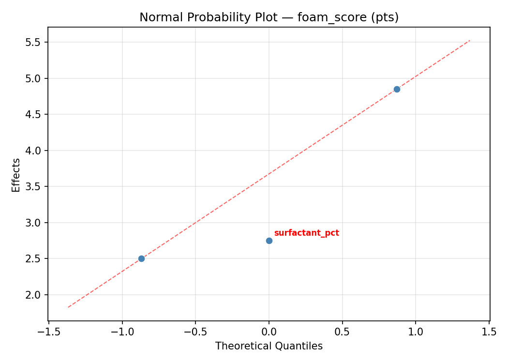
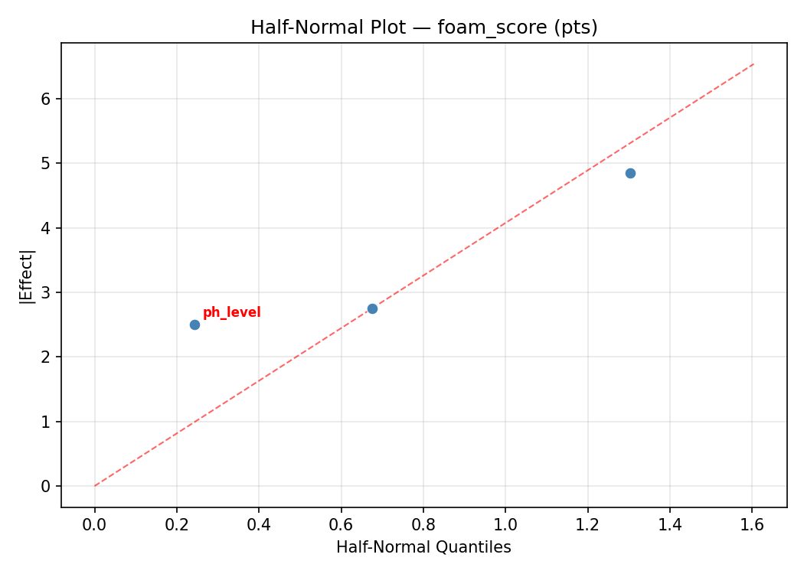
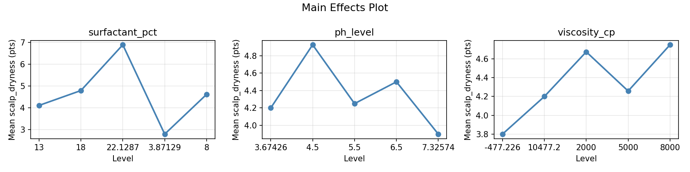
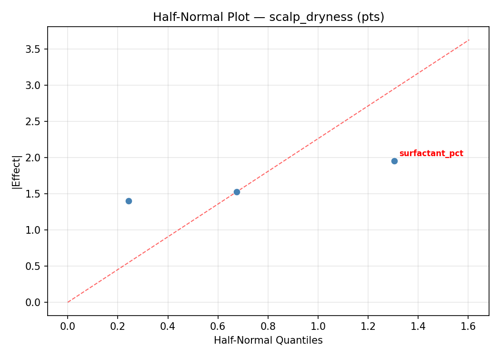
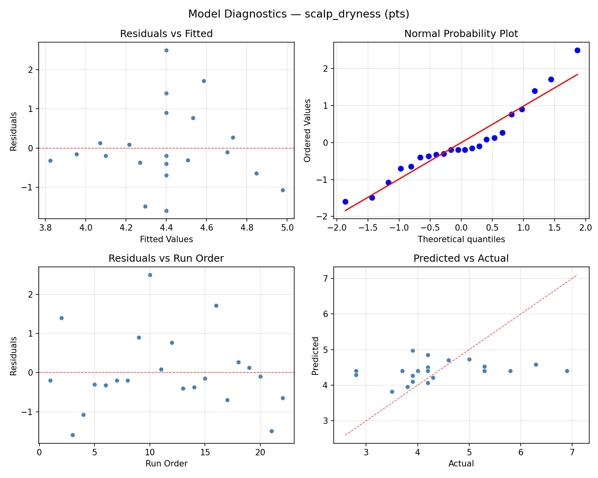
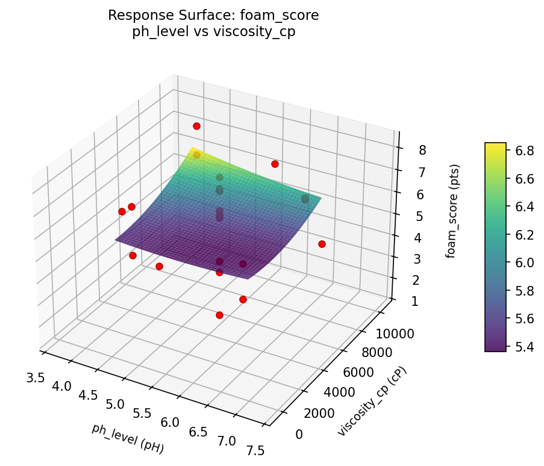
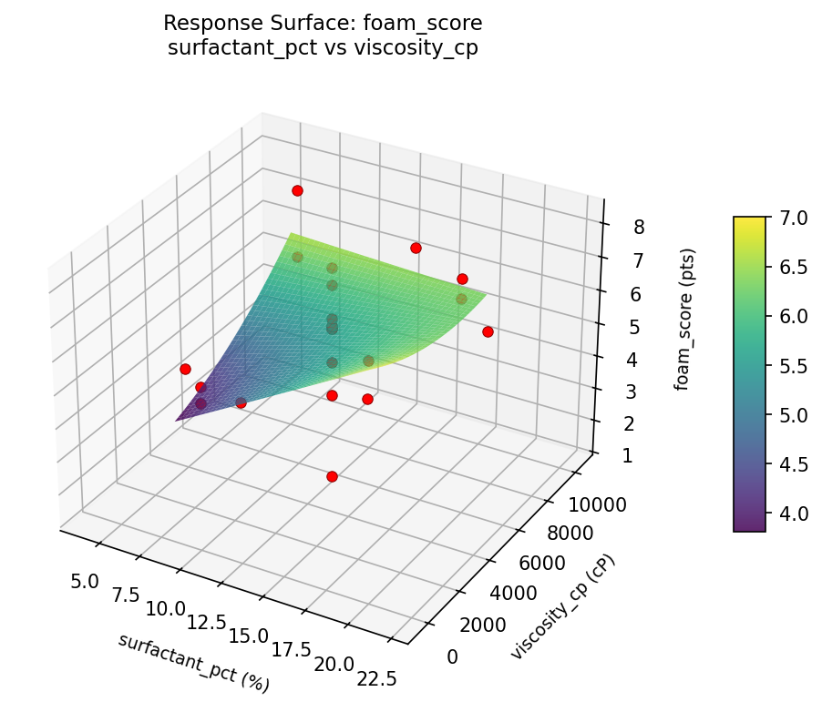
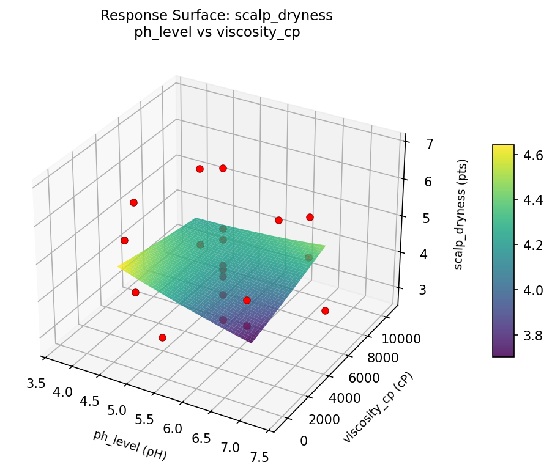

Summary
This experiment investigates shampoo foaming & cleansing. Central composite design to maximize foam volume and cleansing power while minimizing scalp dryness by tuning surfactant blend, pH, and viscosity.
The design varies 3 factors: surfactant pct (%), ranging from 8 to 18, ph level (pH), ranging from 4.5 to 6.5, and viscosity cp (cP), ranging from 2000 to 8000. The goal is to optimize 2 responses: foam score (pts) (maximize) and scalp dryness (pts) (minimize). Fixed conditions held constant across all runs include fragrance = floral, preservative = phenoxyethanol.
A Central Composite Design (CCD) was selected to fit a full quadratic response surface model, including curvature and interaction effects. With 3 factors this produces 22 runs including center points and axial (star) points that extend beyond the factorial range.
Quadratic response surface models were fitted to capture potential curvature and factor interactions. The RSM contour plots below visualize how pairs of factors jointly affect each response.
Key Findings
For foam score, the most influential factors were viscosity cp (41.7%), ph level (38.2%), surfactant pct (20.1%). The best observed value was 8.2 (at surfactant pct = 13, ph level = 5.5, viscosity cp = 5000).
For scalp dryness, the most influential factors were viscosity cp (43.8%), ph level (28.8%), surfactant pct (27.5%). The best observed value was 2.8 (at surfactant pct = 18, ph level = 6.5, viscosity cp = 2000).
Recommended Next Steps
- Run confirmation experiments at the predicted optimal settings to validate the model.
- Consider whether any fixed factors should be varied in a future study.
Experimental Setup
Factors
| Factor | Low | High | Unit |
|---|
surfactant_pct | 8 | 18 | % |
ph_level | 4.5 | 6.5 | pH |
viscosity_cp | 2000 | 8000 | cP |
Fixed: fragrance = floral, preservative = phenoxyethanol
Responses
| Response | Direction | Unit |
|---|
foam_score | ↑ maximize | pts |
scalp_dryness | ↓ minimize | pts |
Configuration
{
"metadata": {
"name": "Shampoo Foaming & Cleansing",
"description": "Central composite design to maximize foam volume and cleansing power while minimizing scalp dryness by tuning surfactant blend, pH, and viscosity"
},
"factors": [
{
"name": "surfactant_pct",
"levels": [
"8",
"18"
],
"type": "continuous",
"unit": "%"
},
{
"name": "ph_level",
"levels": [
"4.5",
"6.5"
],
"type": "continuous",
"unit": "pH"
},
{
"name": "viscosity_cp",
"levels": [
"2000",
"8000"
],
"type": "continuous",
"unit": "cP"
}
],
"fixed_factors": {
"fragrance": "floral",
"preservative": "phenoxyethanol"
},
"responses": [
{
"name": "foam_score",
"optimize": "maximize",
"unit": "pts"
},
{
"name": "scalp_dryness",
"optimize": "minimize",
"unit": "pts"
}
],
"settings": {
"operation": "central_composite",
"test_script": "use_cases/220_shampoo_foam/sim.sh"
}
}
Experimental Matrix
The Central Composite Design produces 22 runs. Each row is one experiment with specific factor settings.
| Run | surfactant_pct | ph_level | viscosity_cp |
|---|
| 1 | 13 | 5.5 | 5000 |
| 2 | 18 | 4.5 | 8000 |
| 3 | 8 | 6.5 | 2000 |
| 4 | 13 | 7.32574 | 5000 |
| 5 | 13 | 5.5 | 5000 |
| 6 | 3.87129 | 5.5 | 5000 |
| 7 | 13 | 5.5 | -477.226 |
| 8 | 13 | 5.5 | 5000 |
| 9 | 18 | 6.5 | 2000 |
| 10 | 22.1287 | 5.5 | 5000 |
| 11 | 13 | 5.5 | 5000 |
| 12 | 13 | 3.67426 | 5000 |
| 13 | 13 | 5.5 | 5000 |
| 14 | 8 | 4.5 | 8000 |
| 15 | 13 | 5.5 | 5000 |
| 16 | 18 | 4.5 | 2000 |
| 17 | 13 | 5.5 | 10477.2 |
| 18 | 18 | 6.5 | 8000 |
| 19 | 13 | 5.5 | 5000 |
| 20 | 8 | 4.5 | 2000 |
| 21 | 8 | 6.5 | 8000 |
| 22 | 13 | 5.5 | 5000 |
Step-by-Step Workflow
1
Preview the design
$ doe info --config use_cases/220_shampoo_foam/config.json
2
Generate the runner script
$ doe generate --config use_cases/220_shampoo_foam/config.json \
--output use_cases/220_shampoo_foam/results/run.sh --seed 42
3
Execute the experiments
$ bash use_cases/220_shampoo_foam/results/run.sh
4
Analyze results
$ doe analyze --config use_cases/220_shampoo_foam/config.json
5
Get optimization recommendations
$ doe optimize --config use_cases/220_shampoo_foam/config.json
6
Multi-objective optimization
With 2 competing responses, use --multi to find the best compromise via Derringer–Suich desirability.
$ doe optimize --config use_cases/220_shampoo_foam/config.json --multi
7
Generate the HTML report
$ doe report --config use_cases/220_shampoo_foam/config.json \
--output use_cases/220_shampoo_foam/results/report.html
Features Exercised
| Feature | Value |
|---|
| Design type | central_composite |
| Factor types | continuous (all 3) |
| Arg style | double-dash |
| Responses | 2 (foam_score ↑, scalp_dryness ↓) |
| Total runs | 22 |
Analysis Results
Generated from actual experiment runs using the DOE Helper Tool.
Response: foam_score
Top factors: viscosity_cp (41.7%), ph_level (38.2%), surfactant_pct (20.1%).
ANOVA
| Source | DF | SS | MS | F | p-value |
|---|
| Source | DF | SS | MS | F | p-value |
| surfactant_pct | 4 | 7.4636 | 1.8659 | 0.422 | 0.7889 |
| ph_level | 4 | 8.3861 | 2.0965 | 0.475 | 0.7538 |
| viscosity_cp | 4 | 13.7445 | 3.4361 | 0.778 | 0.5666 |
| Lack | of | Fit | 2 | 0.0000 | 0.0000 |
| Pure | Error | 7 | 30.9150 | | |
| Error | 9 | 20.0094 | 4.4164 | | |
| Total | 21 | 49.6036 | 2.3621 | | |
Pareto Chart

Main Effects Plot

Normal Probability Plot of Effects

Half-Normal Plot of Effects

Model Diagnostics

Response: scalp_dryness
Top factors: viscosity_cp (43.8%), ph_level (28.8%), surfactant_pct (27.5%).
ANOVA
| Source | DF | SS | MS | F | p-value |
|---|
| Source | DF | SS | MS | F | p-value |
| surfactant_pct | 4 | 2.0258 | 0.5065 | 0.436 | 0.7797 |
| ph_level | 4 | 2.3558 | 0.5890 | 0.507 | 0.7322 |
| viscosity_cp | 4 | 7.9700 | 1.9925 | 1.716 | 0.2300 |
| Lack | of | Fit | 2 | 1.2596 | 0.6298 |
| Pure | Error | 7 | 8.1288 | | |
| Error | 9 | 9.3883 | 1.1613 | | |
| Total | 21 | 21.7400 | 1.0352 | | |
Pareto Chart

Main Effects Plot

Normal Probability Plot of Effects

Half-Normal Plot of Effects

Model Diagnostics

Response Surface Plots
3D surfaces fitted with quadratic RSM. Red dots are observed data points.
foam score ph level vs viscosity cp

foam score surfactant pct vs ph level

foam score surfactant pct vs viscosity cp

scalp dryness ph level vs viscosity cp

scalp dryness surfactant pct vs ph level

scalp dryness surfactant pct vs viscosity cp

Multi-Objective Optimization
When responses compete, Derringer–Suich desirability finds the best compromise.
Each response is scaled to a 0–1 desirability, then combined via a weighted geometric mean.
Overall Desirability
D = 0.7703
Per-Response Desirability
| Response | Weight | Desirability | Predicted | Dir |
|---|
foam_score |
1.5 |
|
6.90 0.7807 6.90 pts |
↑ |
scalp_dryness |
1.0 |
|
3.70 0.7550 3.70 pts |
↓ |
Recommended Settings
| Factor | Value |
|---|
surfactant_pct | 13 % |
ph_level | 5.5 pH |
viscosity_cp | -477.226 cP |
Source: from observed run #17
Trade-off Summary
Sacrifice = how much worse than single-objective best.
| Response | Predicted | Best Observed | Sacrifice |
|---|
scalp_dryness | 3.70 | 2.80 | +0.90 |
Top 3 Runs by Desirability
| Run | D | Factor Settings |
|---|
| #15 | 0.6885 | surfactant_pct=18, ph_level=6.5, viscosity_cp=2000 |
| #18 | 0.6864 | surfactant_pct=13, ph_level=5.5, viscosity_cp=5000 |
Model Quality
| Response | R² | Type |
|---|
scalp_dryness | 0.1702 | linear |
Full Multi-Objective Output
============================================================
MULTI-OBJECTIVE OPTIMIZATION
Method: Derringer-Suich Desirability Function
============================================================
Overall desirability: D = 0.7703
Response Weight Desirability Predicted Direction
---------------------------------------------------------------------
foam_score 1.5 0.7807 6.90 pts ↑
scalp_dryness 1.0 0.7550 3.70 pts ↓
Recommended settings:
surfactant_pct = 13 %
ph_level = 5.5 pH
viscosity_cp = -477.226 cP
(from observed run #17)
Trade-off summary:
foam_score: 6.90 (best observed: 8.20, sacrifice: +1.30)
scalp_dryness: 3.70 (best observed: 2.80, sacrifice: +0.90)
Model quality:
foam_score: R² = 0.5668 (quadratic)
scalp_dryness: R² = 0.1702 (linear)
Top 3 observed runs by overall desirability:
1. Run #17 (D=0.7703): surfactant_pct=13, ph_level=5.5, viscosity_cp=-477.226
2. Run #15 (D=0.6885): surfactant_pct=18, ph_level=6.5, viscosity_cp=2000
3. Run #18 (D=0.6864): surfactant_pct=13, ph_level=5.5, viscosity_cp=5000
Full Analysis Output
=== Main Effects: foam_score ===
Factor Effect Std Error % Contribution
--------------------------------------------------------------
viscosity_cp 2.5917 0.3277 41.7%
ph_level 2.3750 0.3277 38.2%
surfactant_pct 1.2500 0.3277 20.1%
=== ANOVA Table: foam_score ===
Source DF SS MS F p-value
-----------------------------------------------------------------------------
surfactant_pct 4 7.4636 1.8659 0.422 0.7889
ph_level 4 8.3861 2.0965 0.475 0.7538
viscosity_cp 4 13.7445 3.4361 0.778 0.5666
Lack of Fit 2 0.0000 0.0000 0.000 1.0000
Pure Error 7 30.9150 4.4164
Error 9 20.0094 4.4164
Total 21 49.6036 2.3621
=== Summary Statistics: foam_score ===
surfactant_pct:
Level N Mean Std Min Max
------------------------------------------------------------
13 12 5.2500 1.8981 1.4000 8.2000
18 4 6.5000 0.6481 5.9000 7.2000
22.1287 1 6.0000 0.0000 6.0000 6.0000
3.87129 1 6.2000 0.0000 6.2000 6.2000
8 4 6.4500 0.6455 5.8000 7.1000
ph_level:
Level N Mean Std Min Max
------------------------------------------------------------
3.67426 1 4.2000 0.0000 4.2000 4.2000
4.5 4 6.5750 0.6652 6.0000 7.2000
5.5 12 5.5250 1.8777 1.4000 8.2000
6.5 4 6.3750 0.6076 5.8000 6.9000
7.32574 1 4.7000 0.0000 4.7000 4.7000
viscosity_cp:
Level N Mean Std Min Max
------------------------------------------------------------
-477.226 1 7.7000 0.0000 7.7000 7.7000
10477.2 1 6.2000 0.0000 6.2000 6.2000
2000 4 6.7500 0.6455 5.8000 7.2000
5000 12 5.1083 1.7568 1.4000 8.2000
8000 4 6.2000 0.4690 5.9000 6.9000
=== Main Effects: scalp_dryness ===
Factor Effect Std Error % Contribution
--------------------------------------------------------------
viscosity_cp 1.6750 0.2169 43.8%
ph_level 1.1000 0.2169 28.8%
surfactant_pct 1.0500 0.2169 27.5%
=== ANOVA Table: scalp_dryness ===
Source DF SS MS F p-value
-----------------------------------------------------------------------------
surfactant_pct 4 2.0258 0.5065 0.436 0.7797
ph_level 4 2.3558 0.5890 0.507 0.7322
viscosity_cp 4 7.9700 1.9925 1.716 0.2300
Lack of Fit 2 1.2596 0.6298 0.542 0.6040
Pure Error 7 8.1288 1.1613
Error 9 9.3883 1.1613
Total 21 21.7400 1.0352
=== Summary Statistics: scalp_dryness ===
surfactant_pct:
Level N Mean Std Min Max
------------------------------------------------------------
13 12 4.2167 0.9084 2.8000 5.8000
18 4 4.9500 1.0661 4.0000 6.3000
22.1287 1 3.9000 0.0000 3.9000 3.9000
3.87129 1 4.2000 0.0000 4.2000 4.2000
8 4 4.5750 1.5521 3.7000 6.9000
ph_level:
Level N Mean Std Min Max
------------------------------------------------------------
3.67426 1 4.6000 0.0000 4.6000 4.6000
4.5 4 5.0000 1.4306 3.8000 6.9000
5.5 12 4.1833 0.9003 2.8000 5.8000
6.5 4 4.5250 1.2010 3.7000 6.3000
7.32574 1 3.9000 0.0000 3.9000 3.9000
viscosity_cp:
Level N Mean Std Min Max
------------------------------------------------------------
-477.226 1 5.0000 0.0000 5.0000 5.0000
10477.2 1 4.2000 0.0000 4.2000 4.2000
2000 4 5.6000 1.3115 3.9000 6.9000
5000 12 4.1250 0.8771 2.8000 5.8000
8000 4 3.9250 0.2217 3.7000 4.2000
Optimization Recommendations
=== Optimization: foam_score ===
Direction: maximize
Best observed run: #2
surfactant_pct = 13
ph_level = 5.5
viscosity_cp = 5000
Value: 8.2
RSM Model (linear, R² = 0.0948, Adj R² = -0.0560):
Coefficients:
intercept +5.7727
surfactant_pct -0.0563
ph_level -0.3943
viscosity_cp +0.4026
RSM Model (quadratic, R² = 0.2411, Adj R² = -0.3281):
Coefficients:
intercept +5.7859
surfactant_pct -0.0563
ph_level -0.3943
viscosity_cp +0.4026
surfactant_pct*ph_level +0.1250
surfactant_pct*viscosity_cp +0.7000
ph_level*viscosity_cp +0.0250
surfactant_pct^2 -0.3016
ph_level^2 +0.2234
viscosity_cp^2 +0.0584
Curvature analysis:
surfactant_pct coef=-0.3016 concave (has a maximum)
ph_level coef=+0.2234 convex (has a minimum)
viscosity_cp coef=+0.0584 negligible curvature
Notable interactions:
surfactant_pct*viscosity_cp coef=+0.7000 (synergistic)
Predicted optimum (from linear model, at observed points):
surfactant_pct = 8
ph_level = 4.5
viscosity_cp = 8000
Predicted value: 6.6259
Surface optimum (via L-BFGS-B, linear model):
surfactant_pct = 8
ph_level = 4.5
viscosity_cp = 8000
Predicted value: 6.6259
Model quality: Weak fit — consider adding center points or using a different design.
Factor importance:
1. ph_level (effect: 2.7, contribution: 41.0%)
2. viscosity_cp (effect: 2.5, contribution: 39.1%)
3. surfactant_pct (effect: 1.3, contribution: 19.9%)
=== Optimization: scalp_dryness ===
Direction: minimize
Best observed run: #3
surfactant_pct = 18
ph_level = 6.5
viscosity_cp = 2000
Value: 2.8
RSM Model (linear, R² = 0.0197, Adj R² = -0.1436):
Coefficients:
intercept +4.4000
surfactant_pct +0.1227
ph_level -0.0736
viscosity_cp +0.0937
RSM Model (quadratic, R² = 0.2967, Adj R² = -0.2308):
Coefficients:
intercept +4.0868
surfactant_pct +0.1227
ph_level -0.0736
viscosity_cp +0.0937
surfactant_pct*ph_level -0.1500
surfactant_pct*viscosity_cp +0.0500
ph_level*viscosity_cp +0.2250
surfactant_pct^2 -0.1934
ph_level^2 +0.3766
viscosity_cp^2 +0.2866
Curvature analysis:
ph_level coef=+0.3766 convex (has a minimum)
viscosity_cp coef=+0.2866 convex (has a minimum)
surfactant_pct coef=-0.1934 concave (has a maximum)
Predicted optimum (from linear model, at observed points):
surfactant_pct = 18
ph_level = 4.5
viscosity_cp = 8000
Predicted value: 4.6900
Surface optimum (via L-BFGS-B, linear model):
surfactant_pct = 8
ph_level = 6.5
viscosity_cp = 2000
Predicted value: 4.1100
Model quality: Weak fit — consider adding center points or using a different design.
Factor importance:
1. ph_level (effect: 3.5, contribution: 47.6%)
2. viscosity_cp (effect: 2.8, contribution: 38.0%)
3. surfactant_pct (effect: 1.0, contribution: 14.4%)